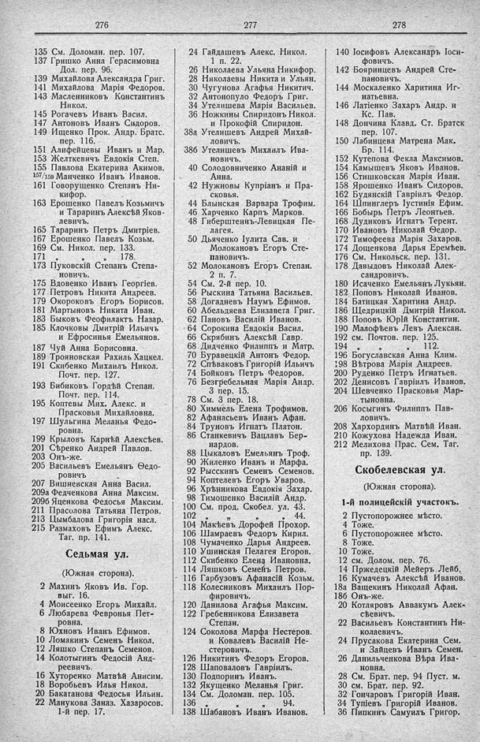

Лист источника 224
Скан

Распознанный текст
276
135 См. Доломан. пер. 107.
137 Гришко Анна Герасимовна
Дол. пер. 96.
139 Михайлова Александра Григ.
141 Михайлова Марія Федоров.
143 Масленниковъ Константинъ
Никол.
145 Рогачевъ Иванъ Васил.
147 Антоновъ Иванъ Сидоров.
149 Ищенко Прок. Андр. Братс.
пер. 116.
151 Алифейцевы Иванъ и Мар.
153 Желткевичъ Евдокія Степ.
155 Павлова Екатерина Акимов.
157/159 Манченко Иванъ Иванов.
161 Говорущенко Степанъ Ни-
кифор.
163 Ерошенко Павелъ Козьмичъ
и Тараринъ Алексѣй Яков-
левичъ.
165 Тараринъ Петръ Дмитріев.
167 Ерошенко Павелъ Козьм.
169 См. Никол. пер. 133.
171 „ „ 178.
173 Пуковскій Степанъ Степа-
новичъ.
175 Вдовенко Иванъ Георгіев.
177 Петровъ Никита Андреев.
179 Окороковъ Егоръ Борисов.
181 Мартыновъ Никита Иван.
183 Быковъ Феофилактъ Назар.
185 Клочковы Дмитрій Ильичъ
и Ефросинья Емельянов.
187 Чуй Анна Борисовна.
189 Трояновская Рахиль Хацкел.
191 Скибенко Михаилъ Никол.
Почт. пер. 127.
193 Бибиковъ Гордѣй Степан.
Почт. пер. 114.
195 Коптевы Мих. Алекс. и
Прасковья Михайловна.
197 Шульгина Меланья Федо-
ровна.
199 Крыловъ Карнѣй Алексѣев.
201 Сѣренко Андрей Павлов.
203 Онъ-же.
205 Васильевъ Емельянъ Ѳедо-
ровичъ
207 Вишневская Анна Васил.
209а Федченкова Анна Максим.
209б Яценкова Федосья Максим.
211 Прасолова Татьяна Петров.
213 Цымбалова Григорія насл.
215 Размаховъ Ефимъ Алекс.
Таг. пр. 141.
Седьмая ул.
(Южная сторона).
2 Махинъ Яковъ Ив. Гор.
выг. 16.
4 Моисеенко Егоръ Михайл.
6 Любарева Февронья Пет-
ровна.
8 Юхновъ Иванъ Ефимов.
10 Ломакинъ Семенъ Никол.
12 Ляшко Степанъ Семенов.
14 Колотыгинъ Федосій Анд-
реевичъ.
16 Хуторенко Матвѣй Анисим.
18 Воробьевъ Илья Никол.
20 Бакатанова Федосья Ильин.
22 Манукова Заназ. Хазаросов.
1-й пер. 17.
277
24 Гайдашевъ Алекс. Никол.
1 п. 22.
26 Николаева Ульяна Никифор.
28 Николаевы Никита и Ульян.
30 Чугунова Агафья Никитич.
32 Антонопуло Федоръ Григ.
34 Утелишева Марія Васильев.
36 Ножкины Спиридонъ Никол.
и Прокофій Спиридон.
38а Утелишевъ Андрей Михай-
ловичъ.
38б Утелишевъ Михаилъ Ива-
новичъ.
40 Солодовниченко Ананій и
Анна.
42 Нужновы Купріанъ и Пра-
сковья.
44 Блынская Варвара Трофим.
46 Харченко Карпъ Марков.
48 Гиберштейнъ-Левицкая Пе-
лагея.
50 Дьяченко Іулита Сав. и
Молокановъ Егоръ Сте-
пановичъ.
52 Молокановъ Егоръ Степан.
2 п. 7.
54 См. 2-й пер. 10.
56 Рыскина Татьяна Васильев.
58 Догадневъ Наумъ Ефимов.
60 Абельдяева Елизавета Григ.
62 Пановъ Василій Иванов.
64 Сорокина Евдокія Васил.
66 Скрябинъ Алексѣй Гавр.
68 Дидченко Филиппъ и Матр.
70 Буравецкій Антонъ Федор.
72 Спѣваковъ Григорій Ильичъ
74 Бойковъ Петръ Федоров.
76 Безгребельная Марія Андр.
3 пер. 15.
78 См. 3 пер. 18.
80 Химмель Елена Трофимов.
82 Афанасьевъ Иванъ Афан.
84 Труновъ Игнатъ Платон.
86 Станкевичъ Вацлавъ Бер-
нардов.
88 Цыкаловъ Емельянъ Троф.
90 Жиленко Иванъ и Марфа.
92 Рысскинъ Семенъ Семенов.
94 Коптелевъ Егоръ Уваров.
96 Хрѣнникова Евдокія Захар.
98 Тимошенко Василій Андр.
100 См. прод. Скобел. ул. 43.
102 „ „ „ 44.
104 Макѣевъ Дорофей Прохор.
106 Шамраевъ Федоръ Кирил.
108 Чумаченко Дарья Андреев.
110 Ушинская Пелагея Егоров.
112 Скибенко Елена Ивановна.
114 Ляшковъ Семенъ Петров.
116 Гарбузовъ Афанасій Козьм.
118 Колесниковъ Михаилъ Пор-
фировичъ.
120 Данилова Агафья Максим.
122 Гребенникова Елизавета
Степан.
124 Соколова Марфа Нестеров.
и Ковалевъ Василій Не-
стеровичъ.
126 Никитинъ Федоръ Егоров.
128 Шаповаловъ Гавріилъ.
130 Подпоринъ Иванъ.
132 Якущенко Меланья Григ.
134 См. Доломан. пер. 105.
136 „ „ „ 94.
138 Шабановъ Иванъ Иванов.
278
140 Іосифовъ Александръ Іоси-
фовичъ.
142 Бояринцевъ Андрей Сте-
пановичъ.
144 Москаленко Харитина Иг-
натьевна.
146 Латіенко Захаръ Андр. и
Кс. Пав.
148 Дончина Клавд. Ст. Братск
пер. 107.
150 Лабинцева Матрена Мак.
Бр. 114.
152 Кутепова Фекла Максимов.
154 Камышевъ Яковъ Иванов.
156 Стишковская Марія Иван.
158 Ярошенко Иванъ Сидоров.
162 Будянскій Гавріилъ Федор.
164 Шпинглеръ Іустинія Ефим.
166 Бобырь Петръ Леонтьев.
168 Дудиковъ Игнатъ Терент.
170 Ивановъ Николай Ѳедор.
172 Тимофеева Марія Захаров.
174 Дощенкова Дарья Еремѣев.
176 См. Никольск. пер. 131.
178 Давыдовъ Николай Алек-
сандровичъ.
180 Исаченко Емельянъ Лукьян.
182 Поповъ Николай Иванов.
184 Батицкая Харитина Андр.
186 Щедрицкій Дмитрій Никол.
188 Поповъ Юрій Константин.
190 Малофѣевъ Левъ Алексан.
192 см. Почтов. пер. 125.
194 „ „ „ 112.
196 Богуславская Анна Клим.
198 Вѣтрова Марія Андреев.
200 Руденко Петръ Игнатьев.
202 Денисовъ Гавріилъ Иванов.
204 Шевченко Прасковья Мар-
тыновна.
206 Косыгинъ Филиппъ Пав-
ловичъ.
208 Хархординъ Матвѣй Иван.
210 Кожухова Надежда Иван.
212 Мелихова Прас. Сем. Таг.
пр. 139.
Скобелевская ул.
(Южная сторона).
1-й полицейскій участокъ.
2 Пустопорожнее мѣсто.
4 Тоже.
6 Пустопорожнее мѣсто.
8 Тоже.
10 Тоже.
12 см. Долом. пер. 76.
14 Пржедецкій Мейеръ Лейб.
16 Кумачевъ Алексѣй Иванов.
18а Ващекинъ Николай Афан.
18б Онъ-же.
20 Котляровъ Аввакумъ Алек-
сѣевичъ.
22 Васильевъ Константинъ Ни-
колаевичъ.
24 Прусакова Екатерина Сем.
и Зайцевъ Иванъ Семен.
26 Данильченкова Вѣра Ива-
новна.
28 См. Брат. пер. 94 Пуст. м.
30 см. Брат. пер. 92.
32 Гончаровъ Григорій Иван.
34 Тупіевъ Григорій Иванов.
36 Пипкинъ Самуилъ Григор.